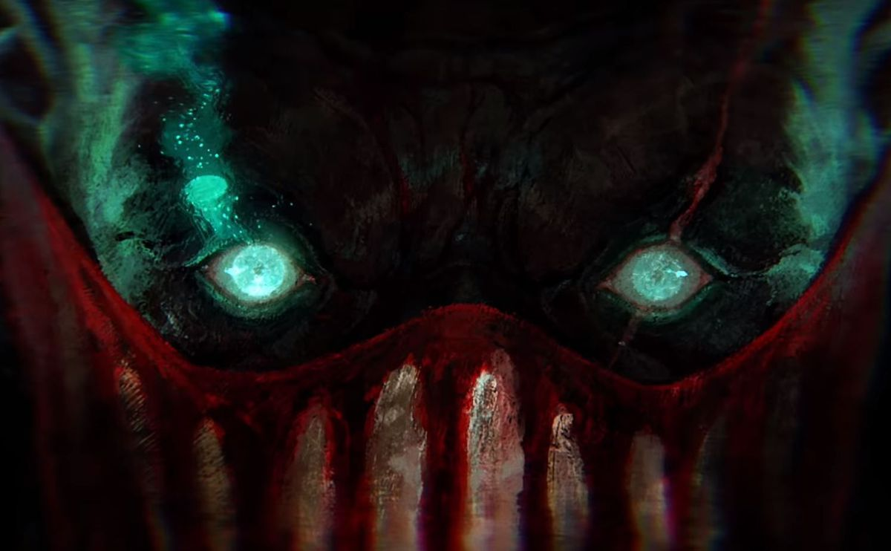

"Here, in the Blue,
dark and deep,
I offer you,
eternal sleep."
"Here, in the Blue,
dark and deep,
I offer you,
eternal sleep."
The Bloodharbor Ripper
When Pyke is unseen by enemies, he rapidly regenerates some of the health recently lost to enemy champions.
Pyke also converts his bonus health into bonus attack damage instead.
“No one’s innocent.”
Tap: Pyke stabs and greatly slows all enemies in front of him.
Hold: Pyke readies and then throws his harpoon, impaling the first enemy struck and pulling them a fixed distance towards him.
Pyke dives into spectral waters, entering camouflage and gaining a significant increase to his movement speed that decays over a few seconds.
Pyke dashes, leaving behind a drowned phantom. After a delay, the phantom returns to Pyke, damaging and stunning enemies it passes through.
Pyke strikes in an X-shaped area, blinking to champions and executing those below a certain flat amount of health. Enemies in the X that are not executed take damage equal to this amount.
When a champion dies in the X, the last ally to assist also gains full kill gold, and Pyke can instantly use Death from Below again for a short period of time.